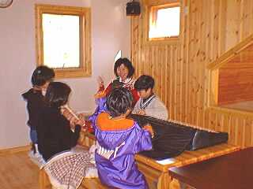
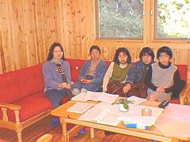

日曜学校・小学生科
|
 会堂と阪南バイブルセンター（教会案内をごらんください）の二ヶ所でもたれていて、教会の会堂内でもたれているものを淡輪校、阪南バイブルセンターで行われているものを、南海団地校と呼んでいます。幼稚園から小学生の子供たちを対象に聖書のことについて教えています。当然、ピクニックや、誕生日会、ゲーム大会など各種催しも行っています。写真は、先のクリスマス礼拝前の練習風景。このメンバーは南海団地校のメンバーで本来は写真とは別の場所で日曜学校を持っているんですが、だいたいいつもこんな感じ． |
|---|
日曜学校・中高生科
|
 中学生と高校生に対して聖書の内容を教えています。教師をしているのは写真左端の大薮のぞみ姉。こちらも定期的にいろいろとイベントをやっています。春、夏には他の教会と合同でキャンプを実施しています。 |
|---|
英会話教室（無料）
 礼拝前の1時間で、英会話教室を持っています。写真中央のエドモンド＝ゴンザレスさんが講師です。教会でのイベントはお金をとらない方針なので無料です。内容はといえば、ただだからと侮るなかれ、かなり実践的でためになります。また、教会にくれば彼と日常的に会話できる機会が得られますので、英語を勉強なさりたい方は是非私たちの教会に来て下さい。勉強になりますよ。
礼拝前の1時間で、英会話教室を持っています。写真中央のエドモンド＝ゴンザレスさんが講師です。教会でのイベントはお金をとらない方針なので無料です。内容はといえば、ただだからと侮るなかれ、かなり実践的でためになります。また、教会にくれば彼と日常的に会話できる機会が得られますので、英語を勉強なさりたい方は是非私たちの教会に来て下さい。勉強になりますよ。
|
|---|
祈祷会
| 阪南バイブルセンターでは毎週水曜日夜７時半より、会堂では毎週木曜日午前１０時より集会が持たれています。ここでは、牧師のショートメッセージと、教会の内容や、個人の事についてお互いに祈りあいます。 |
|---|